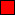

Talk:Map editor/Plan/GUI
From Multi Theft Auto: Wiki
Very nice :) Here's a few ideas:
- The button interface should be available from the beginning for the sake of speed, not just using Edit/Create > Element...
- The main menu could contain icons for Select gamemode (EDF), Edit elements, Create elements, Configuration...
- The Edit menu could open the object browser window, but not hide the map as in the creation procedure: instead move the map to the selected object's location and mark it with an arrow, and enter edit mode for that object when Enter/OK is pressed.
- Back button should probably be on bottom-right corner, to be consistent with the server browser.
- ESC key should have a custom behaviour:
- in the menus: go back one level
- in the object browser: close it and cancel the selection
- in the main menu: show/hide the editor window, to let you just explore your map with movement keys
Needed GUI additions
 Icons Dropdown menus Scrollboxes (for keybinds & object browser interfaces) Text areas (if we're going to do scripting within the map editor) Tabs Checkboxes (could be replaced with small buttons if it's not possible)--jbeta 09:20, 28 January 2007 (CST)
erorr404's suggestions
Pop ups
The GUI should use pop up windows instead of displaying menus within the main window. The reason for this is that it will be hard (and very annoying) to do things outside of the GUI, such as selecting and moving objects, with a window taking up a large portion of the screen. The main menu should be a narrow top or side bar rather than a window. It should be movable but not closable. When you select an option from the drop down list, a new window should pop up for it. Clicking "OK" will apply the settings and close the window, clicking "Cancel" will close the window.
- Is this bearing in mind Esc will open/close the menu on the fly? Just checking, i felt that if you could quickly show and hide it, it would not have been that much of a problem. Most of the time i dont see a need for combining the menu and non-menu stuff, so i didnt feel itd be in the way. The only time is in the Browser whereby it is designed to be thin, and transparent. Moving on, maybe itd be nice to have a way to display the top menu on its own while editing the map? --Talidan2 15:57, 29 January 2007 (CST)
- Having the file menu on it's own is what I'm suggesting. It would work exactly the same way it does in Windows applications - click a menu item and a window pops up. I don't see the point in putting everything into a single, large window. Do you? --Erorr404 18:50, 29 January 2007 (CST)
- Okay, i see what you're saying. How about a button on the right of the top menu, which hides/shows the rest of the menu. The rest of the menu will auto spawn when needing to browse categories etc.
- That sounds like the same thing, only it opens under the file menu rather than in a new window. I think it would be better in a new window so you can have multiple windows open at once (like in Photoshop you can have Layers, Navigation, Tools, etc open at once). I think it would also be more convenient to code. --Erorr404 22:59, 30 January 2007 (CST)
- Tbh it would be best if there were side/bottom window panes that we could dynamically load content into, but I think that's too much to ask of the devs. --Erorr404 22:59, 30 January 2007 (CST)
- Okay, i see what you're saying. How about a button on the right of the top menu, which hides/shows the rest of the menu. The rest of the menu will auto spawn when needing to browse categories etc.
- Having the file menu on it's own is what I'm suggesting. It would work exactly the same way it does in Windows applications - click a menu item and a window pops up. I don't see the point in putting everything into a single, large window. Do you? --Erorr404 18:50, 29 January 2007 (CST)
Notes
- A 'warped' object movement setting is unnecessary. Object movement should be client-side so it should be possible to move objects accurately into place using the smooth setting.
- Okay fair enough - it was jsut an example of what we could put inside the menu --Talidan2 15:57, 29 January 2007 (CST)
- Object movement speed shouldn't be set in a menu, it should be set by holding down the shift and control keys.
- I think you were misunderstanding the purpose of that menu. It was showing chainging the config for controls of the movement speeds, not changing the actual speed. Also, people have complained about innacuracy of object placement in the map editor. Maybe it'd be nice to adopt object mover's F1 F2 F3 F4 movement speed control scheme. --Talidan2 15:57, 29 January 2007 (CST)
- In either case the point is the same - holding shift/control is much more convenient for quickly changing object speed. The base speed can still be set using controls (or in a menu). --Erorr404 18:50, 29 January 2007 (CST)
- I think you were misunderstanding the purpose of that menu. It was showing chainging the config for controls of the movement speeds, not changing the actual speed. Also, people have complained about innacuracy of object placement in the map editor. Maybe it'd be nice to adopt object mover's F1 F2 F3 F4 movement speed control scheme. --Talidan2 15:57, 29 January 2007 (CST)
- The back button in the windows should be at the bottom, not at the top.
- Yep, i realise this. I jsut couldnt be arsed to move the icons up when making the pictures. --Talidan2 15:57, 29 January 2007 (CST)